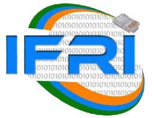

Institut de Formation et de Recherche en Informatique

La vocation de l'Institut de Formation et de la Recherche en Informatique(IFRI) de l'UAC est de former les apprenants capables de devenir des acteurs de solution informatique aux différents problèmes de sociétés en s'appuyant sur les récents développements des technologies de l'Information et de la Communication. Les performances des étudiants de l'IFRI font parler de l'institut au plan national qu'international.
Les étudiants de l'IFRI sont formés avec le goût pour l'innovation et l'entreuprenariat afin de developper des solutions pour résoudre des problèmes spécifiques de leur milieu de vie, et du monde en général.
L'institut dispose d'un laboratoire de recherche en science informatique et application qui permet aux doctorants et aux enseignants de mener des travaux de recherches d'innovations. Le programme de formation dans l'institut contient des cours de certifications dans divers domaines. Ainsi, nos étudiants en L3 suivent les cours de certifications CCNA, CND, CEH.
L'Admission dans les différentes formations de l'IFRI est conditionnée au préalable par une ^pré-inscription. Pour les informations relatives à la pré-inscription ; vueillez envoyez un meesage à " contact@ifri.uac.bj". L'Admission se fait sur étude de dossier.